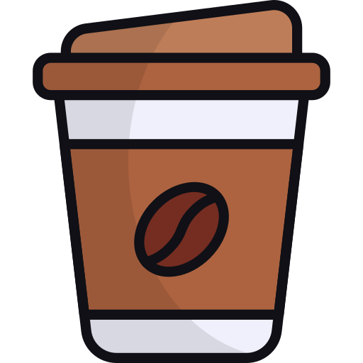
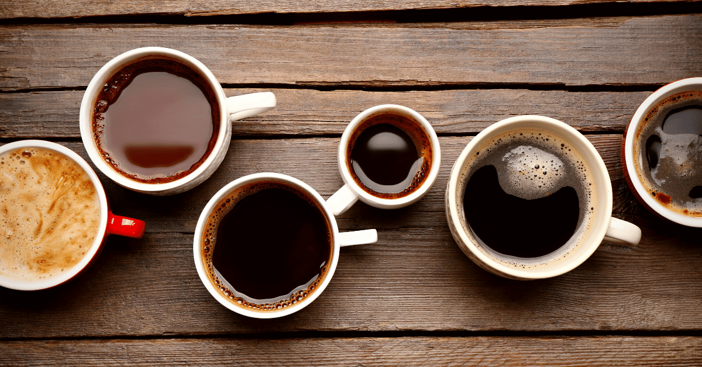

Created back in 2014, Katie's Koffee was created for people who love coffee
I am a full time student who started with a part-time job, I got coffee from many
different coffee places daily and honesty it became too expansive. I wanted to create an
afforable coffee brand. I worked with coffee bean grows until I found the perfect beans for my
brand. I am still a full time student working toward my undergrad comp sci degree but I continue to
working towrad expanding my comaany. As of right now my coffee is only sold online but I would love to
see my brand in stores.
Reviews:
This was the best coffee I have ever had. These beans are so smooth, I will never go back to mainstream coffee shops

As someone who likes veriety in the moning, Katie's Koffee has it all.
Smooth blonde roast, bold dark roast, and a mellow medium roast just to name a few.